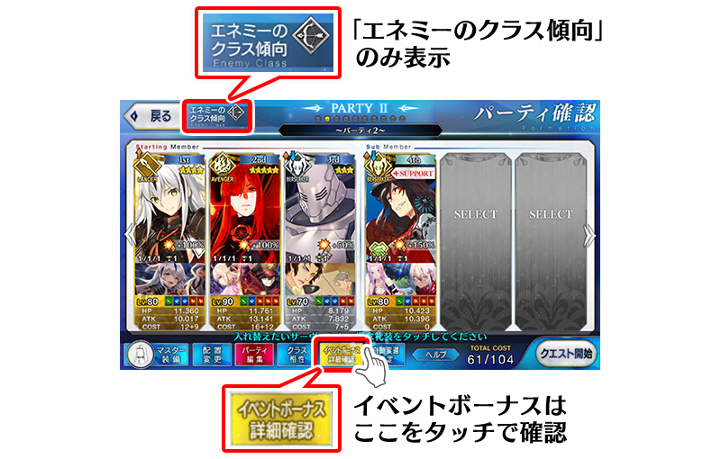
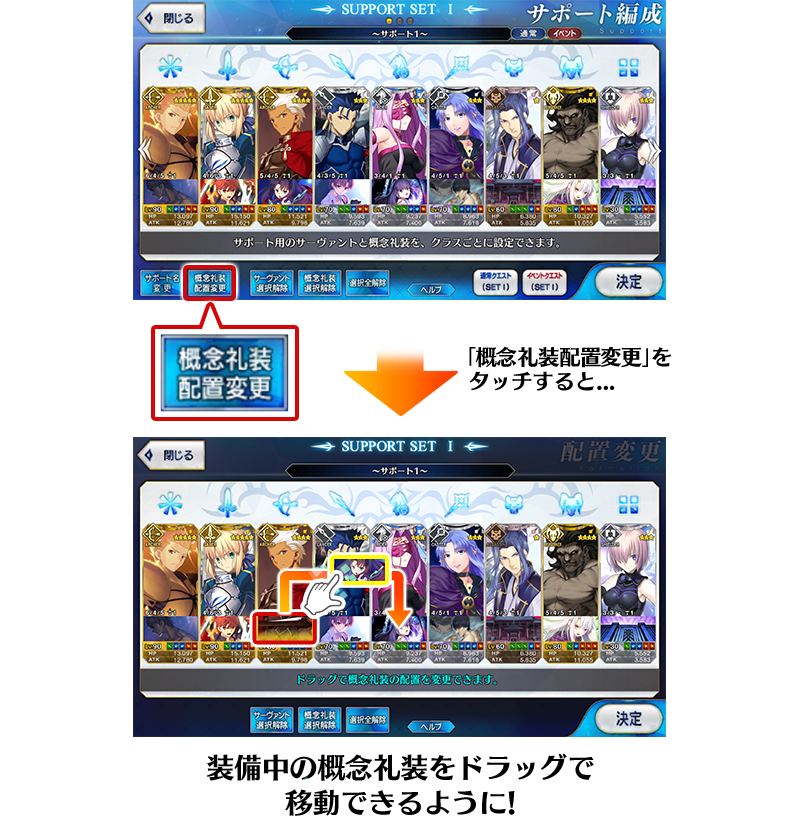
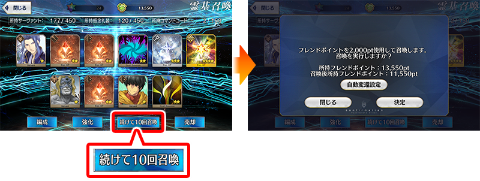

- 7/12
- 【來自迦勒底廣報局】關於7月的遊戲更新
非常感謝各位使用「Fate/Grand Order」。
來自迦勒底廣報局，告知關於預定2019年7月的下次遊戲更新。
以下介紹更新後反映的更新內容中，具有代表性的更新內容。
①於隊伍編成畫面修改為總是可確認敵人的職階傾向
在隊伍編成畫面上方修改為常駐顯示「敵人的職階傾向」。
※關於至今為止每隔一段時間切換顯示的各種特效效果及特攻效果，可在「活動加成詳細確認」確認。

※開發中畫面。
②在支援編成畫面修改為可透過概念禮裝的拖曳變更配置
在支援編成畫面修改為可透過概念禮裝的拖曳變更配置。

※開發中畫面。
③★在初次獲得4(SR)以下的從者時修改為自動上鎖
在初次獲得4★4(SR)以下的從者時修改為自動上鎖。
※有關★5(SSR)從者至今為止同様有第2張以後也自動上鎖。
※就算在本功能實裝獲得1次的情況也不會自動上鎖。
④修改為可從召喚結果畫面繼續召喚
不用從召喚結果畫面回到召喚選擇畫面，修改為可繼續10次召喚。
伴隨於此，聖晶石召喚・友情點數召喚的各召喚結果畫面的「召喚」鍵變更為「繼續10次召喚」鍵。
想結束召喚的話，請點擊畫面左上的「關閉(閉じる)」鍵。

※開發中畫面。
以上為預定2019年7月實施的下次遊戲更新主要內容。
另外今後，也預定在期間限定活動和期間限定宣傳活動中，會有將通過主線關卡設為開放條件的情況。
無論如何，如果推進主線關卡的攻略會有所幫助。
今後也請多多指教「Fate/Grand Order」。